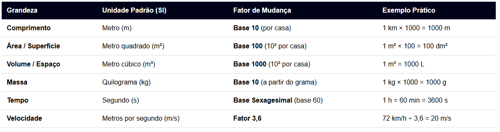

Conversão de Unidades
A conversão de unidades é o processo matemático que transforma a representação de uma grandeza física de uma unidade de medida para outra compatível, utilizando fatores de conversão. Essa prática é essencial na ciência, na engenharia e no cotidiano para garantir a precisão e a padronização das informações. A principal referência global para essas medidas é o Sistema Internacional de Unidades (SI), que estabelece sete grandezas de base (como metro, quilograma e segundo).
Principais Grandezas e Regras de Conversão:
A maioria das conversões baseia-se no sistema métrico decimal. A lógica central consiste em multiplicar ao passar para uma unidade menor (da esquerda para a direita na escala) ou dividir ao passar para uma unidade maior (da direita para a esquerda).

Casos Especiais Importantes
Relação Litro e Volume: Um ponto fundamental na física e na química é a equivalência de capacidade e volume cúbico: 1 dm³ = 1 Litro e 1 cm³ = 1 mL.
Temperatura: Ao contrário de outras grandezas, a conversão de temperatura não usa multiplicação direta, mas sim fórmulas lineares. Por exemplo, de Celsius para Kelvin usa-se: T(K) = T(°C) + 273,15